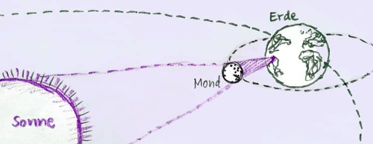

@charak
@charakDie Sonne hinterm Mond
Zweimal im Jahr gibt’s eine Sonnenfinsternis – doch wenn man ihr nicht hinterherreist, sieht man eine ordentliche Finsternis eher selten.
Nächsten Mittwoch (12. August) ist es mal wieder soweit: Der Mond zieht so zwischen Sonne und Erde hindurch, dass er auf die Erdoberfläche einen Schatten wirft. Von der Erde aus gesehen schiebt sich ein schwarzer Kreis über die Sonnenscheibe und verdeckt diese (je nach Standort) teilweise oder sogar vollständig – eine Sonnenfinsternis.

Etwa alle 29 Tagen hat der Mond die Erde einmal umrundet und zieht an der Sonne vorbei. Er wird dann von hinten beleuchtet und ist als Neumond von der Erde aus nicht zu sehen. Warum gibt es dann nicht jeden Monat eine Sonnenfinsternis? Das liegt daran, dass die Bahn des Mondes gegen die scheinbare Sonnenbahn („Ekliptik“) um etwa 5° geneigt ist. Es gibt also nur zwei Punkte, wo sich Mondbahn und „Sonnenbahn“ schneiden – die sogenannten Mondknoten oder Drachenpunkte. In allen anderen Fällen zieht der Neumond oberhalb oder unterhalb der Sonne vorbei. Darum gibt es etwa zwei Sonnenfinsternisse im Jahr.
Zweimal im Jahr – so oft?
Moment, zwei Sonnenfinsternisse jährlich? Sind die nicht viel seltener? – Nee, partielle Sonnenfinsternisse, wo der Mond die Sonne teilweise bedeckt, können sogar bis zu fünfmal in einem Jahr auftreten.
Seltener sind totale Sonnenfinsternisse, dazu braucht es neben der richtigen Mondstellung auch noch den perfekten Abstand. Unser Mond ist mal mehr, mal weniger weit von der Erde entfernt. Manchmal ist er mit etwa 382.800 km recht nah, manchmal fast 383.400 km von uns weg. Steht der Mond weiter entfernt, dann wirkt er von der Erde aus kleiner und schafft es nicht, die Sonne bei einer Finsternis vollständig zu verdecken. Ein Ring bleibt sichtbar. Die Chance auf eine totale Sonnenfinsternis gibt es nur etwa alle 18 Monate.
Alle anderthalb Jahre eine totale Sonnenfinsternis? Wirklich so oft? – Ja, nun … eigentlich schon. Aber eben nicht überall. Sichtbar ist die totale Sonnenfinsternis nur im Kernschatten, wo der Mond die Sonne vollständig bedeckt. Dieser Schatten ist maximal 270 km breit und rast in einem Streifen von einigen Tausend Kilometern Länge über den Globus (Quelle). Eine Finsternis an einem bestimmten Ort dauert dann zwischen einer und sieben Minuten.
Weil nur ein verhältnismäßig kleines Gebiet vom Kernschatten überstrichen wird, kann man eine totale Sonnenfinsternis an seinem Wohnort wirklich selten beobachten. Die Website Time and Date bietet eine tolle Karte, wo die nächsten Sonnenfinsternisse zu sehen sind.
Was sieht man am 12. August 2026?
Bei uns in Deutschland ist die Sonne zwischen 85 und 90% bedeckt, das entspricht einer recht schmalen Sichel und bringt eine merkliche Verfinsterung. Ich erwarte, dass es nicht so ungewöhnlich erscheint, weil das Maximum bei uns kurz nach 20 Uhr auftritt, also nicht lang vor Sonnenuntergang – und da wird es ja normalerweise eh dunkler. Als Beobachtungspunkt empfiehlt sich ein Ort, wo man zum Sonnenuntergang den Westhorizont gut sehen kann. Beginn der Finsternis ist kurz nach 19 Uhr (der Mondkreis berührt die Sonnenscheibe), das Ende der Finsternis ist erst erreicht, wenn die Sonne bei uns schon untergegangen ist.
Weil vom Sonnenlicht immer noch mindestens 10% zu sehen bleiben, sollte man auf keinen Fall direkt in die Sonne blicken – Erblindungsgefahr! Entweder, man besorgt sich eine Sonnenfinsternisbrille (ca. 3–5 Euro bei Optikern, Sternwarten, evtl. Apotheken, etc.) oder kann die Sonne indirekt beobachten (Karton mit winzigem Loch vor ein weißes Papier halten → die Sonnensichel wird sichtbar). Auch 3–4 Schichten einer Rettungsdecke (gold-silber aus dem Verbandskasten) sind möglich (Quelle, hier bekräftigt (ab Min. 4’45”)).
Smartphones sollte man nicht zur Beobachtung verwenden. Erstens kann das Sonnenlicht den Bildsensor beschädigen und zweitens neigt man dazu, am Smartphone immer wieder kurz vorbei direkt in die Sonne zu gucken.
Zwei Wochen später: Mondfinsternis
Am Freitag, den 28. August, läuft der Vollmond auf seiner Bahn genau gegenüber durch den anderen Mondkonten – darum gibt es noch eine Finsternis. Dann tritt der Mond in den Erdschatten, es gibt eine (partielle) Mondfinsternis, siehe mein Blogartikel von 2015. Gegen halb vier Uhr früh geht’s los, etwa um 6:15 Uhr ist das Maximum und der Mond erscheint rötlich.
Schreibt als Kommentar gern, wie ihr die Sonnenfinsternis verfolgen werdet oder hinterher, was euch dabei aufgefallen ist: Haben sich Tiere anders verhalten? Wurde es kühler? Habt ihr sichelförmige Sonnentaler gesehen? Viel Spaß beim Beobachten!
---
Rubrik(en): #sujet